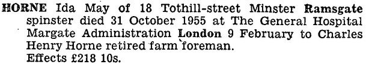
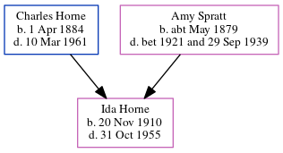

Ida May Horne 1910 - 1955
[ Home ] | [ Calendar ] | [ Surnames Index ] | [ Errors ] | [ Family History ]The child of Charles Horne (a market gardener worker) and Amy Spratt, Ida Horne, the first cousin once-removed on the father's side of Nigel Horne, was born in Haine, Thanet, Kent, England on 20 Nov 19101,2,3.
During her life, she was living at Walnut Tree Cottages, Haine, Thanet, Kent, England on 2 Apr 19116; at Sackettshill Farm in Thanet on 19 Jun 19217; on Refectory House, Tothill Street, Minster in Thanet on 29 Sept 19392; and at 18 Tothill Street, Minster in Thanet in 1955 (when she was living with her).
She died on 31 Oct 1955 in Margate General Hospital, Margate, Kent4,5.
Parents
- Charles Henry was born on 1 Apr 1884
- Amy was born c. May 1879
Citations
- 1911 England Census Online publication - Provo, UT, USA: Ancestry.com Operations, Inc., 2011.Original data - Census Returns of England and Wales, 1911. Kew, Surrey, England: The National Archives of the UK (TNA), 1911. Data imaged from the National Archives, London, England.
- 1939 Register - Findmypast (was the daughter of the head of the household)
- England & Wales, FreeBMD Birth Index, 1837-1915 Online publication - Provo, UT, USA: The Generations Network, Inc., 2006.Original data - General Register Office. England and Wales Civil Registration Indexes. London, England: General Register Office. © Crown copyright. Published by permission of the Cont
- England & Wales Government Probate Death Index 1858-2019 - Findmypast
- England & Wales deaths 1837-2007 - Findmypast
- 1911 Census for England & Wales - Findmypast (was age 0 and the daughter of the head of the household)
- 1921 Census Of England & Wales - Findmypast (was age 10 and the daughter of the head of the household)
Media
Ida May Horne - probate

1939 Register Transcription - TNA-R39-1820-1820E-007-15
England & Wales deaths 1837-2007 - BMD/D/1955/4/AZ/000483/075
1911 England, Wales - GBC-1911-RG14-04511-0115-3
1939 Register Transcription - TNA-R39-1820-1820E-007-17
1911 England, Wales & Scotland Census Transcription - GBC-1911-RG14-04511-0115-4
1939 Register Transcription - TNA-R39-1820-1820E-007-16
England & Wales Government Probate Death Index 1858-2019 - GBOR/GOVPROBATE/C/1956-1956/00102237
Family Tree
Map
Generated by ged2site. Last updated on Jul 3, 2024
Known Issues
Residence record for 1955 contains no citation